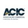

ESPECIAL PUBLICITÁRIO
Educação a distância e sua importância nos últimos anos
Com o avanço da tecnologia, o ensino online se tornou uma alternativa para gestores.

Por ACIC
10/06/2020 15h24 Atualizado há 3 semanas
Nome: Pablo Danillo Alves dos Santos
Email: Pablo.bras@hotmail.com
O ensino a distância (EAD) vem ganhando muito espaço nos últimos anos, situação totalmente contrária de duas décadas atrás, onde eram duramente criticados por educadores e também repreendida no mercado de trabalho. Essa forma de estudo tem o objetivo de facilitar o acesso à educação, seja para cursos superiores ou até mesmo especializações de longa e curta duração.
Ela funciona em uma integração entre educador e aluno, através de ambientes virtuais, onde é permitido a visualização de aulas e módulos, podendo estender-se a uma interação com professores para tirar dúvidas ou rever o conteúdo.
Tudo acontece da mesma forma que o ensino presencial, entretanto, existem algumas diferenças como, por exemplo, o deslocamento, com o EAD, não é necessário enfrentar trânsito para chegar até o local de aula. Outra vantagem são os horários, sendo assim, fica ao critério do aluno montar uma rotina de estudos e o melhor momento para ingressar nas aulas online.
Segundo dados da Associação Brasileira de Ensino a Distância (ABED), o ensino a distância está em constante crescimento, no último censo realizado em 2018, foi apontado um aumento de cerca de 17% em novas matrículas no sistema de educação, percentual maior que no ano anterior.
Mudanças na forma dos estudos
O ano de 2020 impactou todo o planeta com a pandemia do novo Coronavírus, com isso, diversas atitudes e rotinas precisaram ser alteradas, incluindo a da educação. Instituições tradicionais precisaram alterar calendários e implementar ambientes virtuais para que os alunos não perdessem o ano letivo.
Até mesmo os cursos presenciais precisaram ser postos de lado para dar lugar as aulas digitais, as discussões e trabalhos em grupo também tiveram de ter reformulações para que as turmas pudessem continuar a aprendizagem.
O EAD tende a ganhar mais espaço, seja para cursos de graduação ou cursos livres para aperfeiçoamento profissional em áreas específicas. Com a expansão da internet no Brasil, o acesso à informação ficou mais fácil, possibilitando que mais pessoas possam se capacitar, seja pessoal ou profissionalmente.
Pontos positivos do ensino a distância
Flexibilidade e comodidade
O EAD oferta alguns benefícios para quem deseja se capacitar via online, sendo a primeira, a flexibilização de horários e locais para estudar, o aluno escolhe qual melhor momento do dia para acessar as aulas, assim como o local, podendo ser em casa ou qualquer lugar confortável para assistir o conteúdo da instituição, conciliando a jornada de trabalho e estudos.
Variedade de cursos
Outro bom motivo para a escolha do EAD é a variedade de cursos e grade curricular que as instituições oferecem. Com maior demanda de aluno, a oferta de cursos precisou ser ampliada, dessa maneira, mais opções para quem pretende estudar.
Autonomia
Tem quem diga que a autonomia seria uma vantagem, entretanto, pelo ponto de vista, ela pode ser negativa. Acontece que quando o aluno se propõe a estudar sozinho, não existe nenhuma cobrança para entrega das atividades ou mesmo para assistir às aulas, como em cursos presenciais. Sendo assim, o aluno precisa ser disciplinado para que os estudos não se torne uma grande bola de neve.
Oportunidades de estudos
Visando a oportunidade de ajudar diversos empresários e líderes a aprimorar gestões, a Associação Comercial e Industrial de Campinas (ACIC), reformulou um dos principais projetos de educação que a entidade oferece.
O Programa de Formação de Gestores (PFG), será totalmente digital a partir do segundo semestre de 2020. Com carga horária de 48 horas, divididas em 4 módulos, o curso tem o propósito de alavancar e impulsionar a capacidade empreendedora dos participantes, a partir de uma visão 360º e inovadora das áreas de um negócio. O PFG faz parte da Escola de Negócios.
Os alunos do programa terão acompanhamento semanal das atividades com a equipe da ACIC, além disso, poderão interagir em um grupo de estudos com os demais participantes.
Quer mais informações?
Entre em contato conosco pelo telefone (19) 2104-9200 ou no WhatsApp (19) 99607-7604.